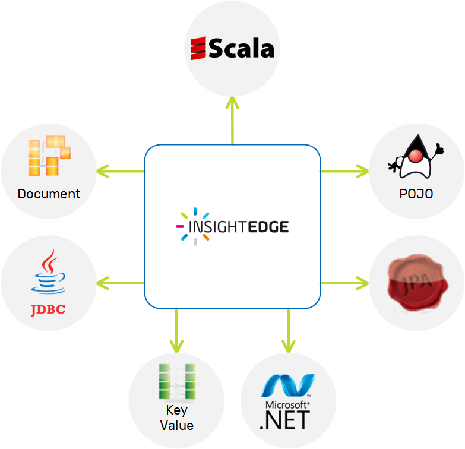

The data grid and

This section contains information on how to perform various types of analytics on the objects stored in the data grid, including but not limited to the following:
You can choose the best API for the case at hand, and operate on the same data regardless of the APIs you have chosen.